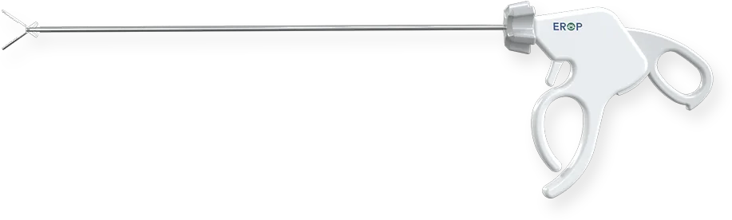

EROP Forcep
Korean laparoscopic forcep surgical instrument supplied by K-Pick Trading Corp in the Philippines. K-Pick Trading Corp supplies this Korean medical device for hospitals, clinics, surgical teams, resellers, and healthcare procurement officers in the Philippines.

Models and specifications
- FC-3 — laparoscopic 3 mm forcep
- FC-5 — laparoscopic 5 mm forcep
Manufactured by EROP (Korea). Distributed in the Philippines by K-Pick Trading Corp, a PH FDA-licensed medical device distributor. See EROP certifications.